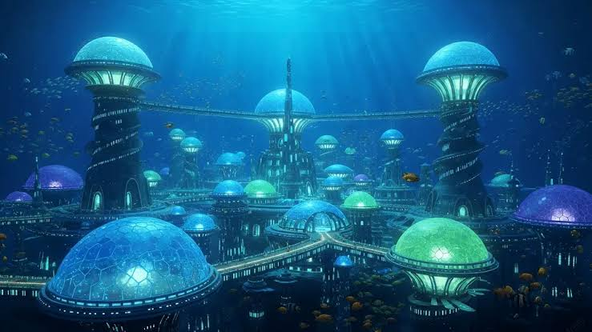

Sobre la ciudad Bermudia
Bermudia Es una ciudad la cual se construyo bajo el oceano gracias al desarrollo de tecnologia
marina. La
ciudad
esta
formada por cupulas donde se construyeron los pueblos, posee transportes subacuaticos para moverse
entre
pueblos.
Una de las principales Caracteristicas de este lugar son su extraña flora y fauna, con un
medioambiente
exotico. La zona quitando las partes niveladas artificicalmente son mayormente motañosas posellendo
bastatntes desniveles
en las zonas menos urbanizadas. Tambien el clima en la ciudad es generalmente frio y humedo, con
constantes corrientes maritimas
